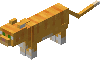

<!doctype html>
<html lang=pl>
<head>

<title>Obiekty</title>
<meta charset=utf-8>

<script src="https://code.jquery.com/jquery-2.1.0.js"></script>

<style>
body{
	background-color: pink;
	overflow: hidden
}

span{
	font-family: "Comic Sans MS";
	font-size: 25pt;
	padding-left: 700px;
	font-weight: bold;
}


</style>

</head>


<body onload="start()" scroll="no">
<script>

var licznik = 0;

function start()
{
	document.getElementById('licznik').innerHTML ="Twój kot wykonał: " + licznik +" kroków";
}


var Obiekt = function(x, y) {
	this.x = x;
	this.y = y;	
	};
	
	
	Obiekt.prototype.rysuj = function() {
		var obiektHtml = '';
		this.obiektElement = $(obiektHtml);
		
		this.obiektElement.css({
		position: "absolute",
		left: this.x,
		top: this.y});
		
		$("body").append(this.obiektElement);
		}
		
	Obiekt.prototype.wPrawo = function()
	{
		
		this.x += 20;
		if(this.x >= 1890) this.x = -200;
		this.obiektElement.css(
		{	
			left: this.x,
			top: this.y
			})	
		licznik++;
		document.getElementById('licznik').innerHTML ="Twój kot wykonał: " + licznik +" kroków";
	}
	Obiekt.prototype.wLewo = function()
	{
		this.x = this.x - 20;
		if(this.x <= -210) this.x = 1880;
		this.obiektElement.css(
			{
			left: this.x,
			top: this.y
			})
		licznik++;
		document.getElementById('licznik').innerHTML ="Twój kot wykonał: " + licznik +" kroków";
	}
	Obiekt.prototype.wGore = function()
	{
		this.y = this.y - 20;
		if(this.y <= -130) this.y = 930;
		this.obiektElement.css(
			{
			left: this.x,
			top: this.y
			})
		licznik++;
		document.getElementById('licznik').innerHTML ="Twój kot wykonał: " + licznik +" kroków";
	}
	Obiekt.prototype.wDol = function()
	{
		this.y = this.y + 20;
		if(this.y >= 950) this.y = -100;
		this.obiektElement.css(
			{
			left: this.x,
			top: this.y
			})
		licznik++;
		document.getElementById('licznik').innerHTML ="Twój kot wykonał: " + licznik +" kroków";
	}
	


		
var kot = new Obiekt(150, 150);
	kot.rysuj();


	
	document.onkeydown = function(x)
	{
		if(x.which == 39) kot.wPrawo();
		else if(x.which == 37) kot.wLewo();
		else if(x.which == 38) kot.wGore();
		else if(x.which == 40) kot.wDol();
	}

	
	
</script>

<span id="licznik"></span>


</body>
</html>


